- Ebay HC-05 Bluetooth Setup Guide
- 3D Camera on the Tricopter
- ProRes editing in Photoshop
- Xiaomi Yi -- The Ant Camera
- Flash cleanflight on cc3d
- Ebay Naze32 with GPS, Bluetooth, OSD and Current Sensor
- Shooting 3D Video with Your Phone(s) or 2 Go Pros
- Minim OSD
- DIY FrSky Receiver with an Arduino Nano and a7105
- My First Tricopter Build
- Flashing BlHeli on HobbyKing F20 ESCs With a Chinese Arduino Nano Clone
- Handling Dates in Hadoop Pig
- LiPo Battery Price Analysis
- ADB over WiFi (aka, how do I debug when using USB host mode?)
- Shrink a linux VM on OSX
- Mounting a VHD NTFS image on Ubuntu
- Untrust Cloudflare MitM
- Ubuntu on the Beaglebone Black
- The Mini Guinea Build
- HK-T6A Trainer Master Modification
- Configuring the HK-T6A for a Flight Simulator
- A complete noob's guide to RC
- DropCam on a Captive Portal
- Java reversing tips
- Ooize Data Pipeline Done-Flag
- Time Machine on exFat
- Optimizing Postgresql
- Mail Maker
- Angularjs and Rails
- nginx ssl chained certs
- rails log tagging
- Converting an Android Project to Maven
- Oh! Map my rails!
- mysql permissions
- reset mysql slave
- installing rmagick on 10.8 with homebrew
- NP-Completeness
- Find and replace non-breaking spaces in vim
- Open Resty the Prebuilt Reverse Proxy
- Sublime Text 2 Tweaks
- Batch Convert CR2 to JPG
- Androids in the wild
- Why you need database_cleaner
- Find and replace in files on linux/unix
- a pithy guide to railsconf 2012
- faster rails boot ruby 1.9.3 + debugger
- homebrew -- fix that nasty mysql.server start segfault
- read/write filesystem on rooted android for an ad-free android experience
- Turn Wikipedia Back On
- compiling qt4 on centos 5
- pip install pymongo with xcode 4
- interactive python history -- better titled "gimme some up arrow love"
- Centos 5.5 yum repo sha256 fix
- Apple Keyboard for Android!
- jQuery Everywhere
- Django Migrations
- RVM + Rails + Git + HTML5 Boiler Plate... What more could you possibly want?
- OneCast 2.0 - downloadable podcasts for androids of every color
- Default Android Menu Icons in Your App
- Hash my password!
- Windows 7 x64 Android Development (ADB)
- Firefox Plugin - Watching for an Application Exit Event
- Stop Redrawing a Fixed Orientation Android App
-
android
- Converting an Android Project to Maven
- read/write filesystem on rooted android for an ad-free android experience
- read/write filesystem on rooted android for an ad-free android experience
- OneCast 2.0 - downloadable podcasts for androids of every color
- OneCast 2.0 - downloadable podcasts for androids of every color
- Default Android Menu Icons in Your App
- Default Android Menu Icons in Your App
- Windows 7 x64 Android Development (ADB)
- Windows 7 x64 Android Development (ADB)
- Stop Redrawing a Fixed Orientation Android App
- Stop Redrawing a Fixed Orientation Android App
-
android-app
-
g1
-
orientation-change
-
redraw
-
firefox-plugin
-
fuel-application
-
javascript
-
technology
- Oh! Map my rails!
- mysql permissions
- reset mysql slave
- installing rmagick on 10.8 with homebrew
- NP-Completeness
- Find and replace non-breaking spaces in vim
- Open Resty the Prebuilt Reverse Proxy
- Sublime Text 2 Tweaks
- Batch Convert CR2 to JPG
- Find and replace in files on linux/unix
- a pithy guide to railsconf 2012
- faster rails boot ruby 1.9.3 + debugger
- homebrew -- fix that nasty mysql.server start segfault
- read/write filesystem on rooted android for an ad-free android experience
- compiling qt4 on centos 5
- interactive python history -- better titled "gimme some up arrow love"
- Centos 5.5 yum repo sha256 fix
- OneCast 2.0 - downloadable podcasts for androids of every color
- Default Android Menu Icons in Your App
- Windows 7 x64 Android Development (ADB)
- Firefox Plugin - Watching for an Application Exit Event
-
xpcom
-
adb
-
debugger
-
development
-
uncategorized
-
windows
-
x64
-
icons
-
menu
-
featured
-
onecast
-
podcast
-
centos
-
error-performing-checksum
-
hashlib
-
python
-
yum
-
history
-
shell
-
up-arrow
-
werror
-
find-and-replace
-
pyqt
-
pyqt-classes-missing
-
qnetworkproxy
-
qt
-
qt4
-
adblock
-
hosts
-
remount
-
homebrew
-
lion
-
mysql
-
ruby-on-rails
- Angularjs and Rails
- rails log tagging
- Oh! Map my rails!
- mysql permissions
- installing rmagick on 10.8 with homebrew
- Open Resty the Prebuilt Reverse Proxy
- Sublime Text 2 Tweaks
- Why you need database_cleaner
- a pithy guide to railsconf 2012
- faster rails boot ruby 1.9.3 + debugger
- faster rails boot ruby 1.9.3 + debugger
- homebrew -- fix that nasty mysql.server start segfault
-
segfault
-
xcode-4-3
-
boot
-
faster-rails
-
rbenv
-
ruby
-
speed
-
railsconf
-
find
-
grep
-
unix
-
xargs
-
database_cleaner
-
factory_girl
-
ffaker
-
rspec
-
cr2
-
imagemagick
-
jpg
-
photoshop
-
node-js
-
ror
-
sublime-2
-
text-editor
-
editors
-
macvim
-
vim
-
caching
-
nginx
-
openresty
-
reverse-proxy
-
security
-
computer-science
-
np
-
np-complete
-
np-completeness
-
theory
-
gem
-
rails
-
rmagick
-
master
-
replication
-
restart
-
slave
-
build
-
git
-
maven
-
chained-cert
-
graylog2
-
log
-
log-aggregation
-
tag
-
angularjs
-
design
-
software-engineering
-
postgres
-
postgresql
-
optimization
-
mac
-
time-machine
-
bash
-
hadoop
-
oozie
-
data-pipelines
-
java
-
reversing
-
ESC
-
F20
-
HobbyKing
-
BlHeli
-
Flashing
-
Programming
-
2015
- Ebay HC-05 Bluetooth Setup Guide
- 3D Camera on the Tricopter
- ProRes editing in Photoshop
- Xiaomi Yi -- The Ant Camera
- Flash cleanflight on cc3d
- Ebay Naze32 with GPS, Bluetooth, OSD and Current Sensor
- Shooting 3D Video with Your Phone(s) or 2 Go Pros
- Minim OSD
- DIY FrSky Receiver with an Arduino Nano and a7105
- My First Tricopter Build
- Flashing BlHeli on HobbyKing F20 ESCs With a Chinese Arduino Nano Clone
- Handling Dates in Hadoop Pig
- LiPo Battery Price Analysis
- ADB over WiFi (aka, how do I debug when using USB host mode?)
- Shrink a linux VM on OSX
- Mounting a VHD NTFS image on Ubuntu
- Untrust Cloudflare MitM
- Ubuntu on the Beaglebone Black
- The Mini Guinea Build
- HK-T6A Trainer Master Modification
- Configuring the HK-T6A for a Flight Simulator
- A complete noob's guide to RC
-
2014
-
2013
-
2012
- Sublime Text 2 Tweaks
- Batch Convert CR2 to JPG
- Androids in the wild
- Why you need database_cleaner
- Find and replace in files on linux/unix
- a pithy guide to railsconf 2012
- faster rails boot ruby 1.9.3 + debugger
- homebrew -- fix that nasty mysql.server start segfault
- read/write filesystem on rooted android for an ad-free android experience
- Turn Wikipedia Back On
- compiling qt4 on centos 5
-
2011
- pip install pymongo with xcode 4
- interactive python history -- better titled "gimme some up arrow love"
- Centos 5.5 yum repo sha256 fix
- Apple Keyboard for Android!
- jQuery Everywhere
- Django Migrations
- RVM + Rails + Git + HTML5 Boiler Plate... What more could you possibly want?
- OneCast 2.0 - downloadable podcasts for androids of every color
- Default Android Menu Icons in Your App
-
2010
In my family, we normally don’t do normal things like go on trips or take cruises or sit around and play board games, although there is an exemption for Settlers of Catan, or watch movies or sit around a warm hearth sipping coco and singing carols or whatever you think is normal. No. We make stuff. Since my sister was busy crocheting me a tie and stitching together a pear (no she’s not 80, she’s a super smart med student) while my other sister sewed shoes for our baby kid and my wife blended pear and chicken (separately I hope) for said kid, I needed something to do. So, I built a smash drone. For those wondering if they should continue reading this overly verbose post, that smash drone, is a DIY RC plane.
Having no RC experience. I hit up the Googs and shortly found out that starting RC, one has a wide variety of options from ready to fly to build it from the bottom up. There are lots of good sources of information out there, but by far, the most comprehensive and effectively communicated info is compiled by the awesome folks at Flite Test. If you’re reading this Flite Test, I owe you a drink. Next time you’re in the SF Bay area, it’s on me.
While considering ordering the parts for an FPV250, which is a completely different story, I started by watching the Flite Test’s beginners series. Swayed by the series focus on planes over quad copters, I opted to learn how to fly a plane first, then perhaps in the future, build a drone.
During my reasearch, I was skeptical to learn that people build planes (that actually fly) with polystyrene foam boards, hot glue and bamboo skewers. My skepticism increased when I learned that the best (most durable, least expensive and easiest to work with) foam board is available at your local Dollar Tree, for $1 of course.
All this lead me to the best trainer I could find – the Smash Drone. Below, I’ll detail everything you need to know to get started, including some practice on the trainer and what to do if a blizzard hits while building your plane.
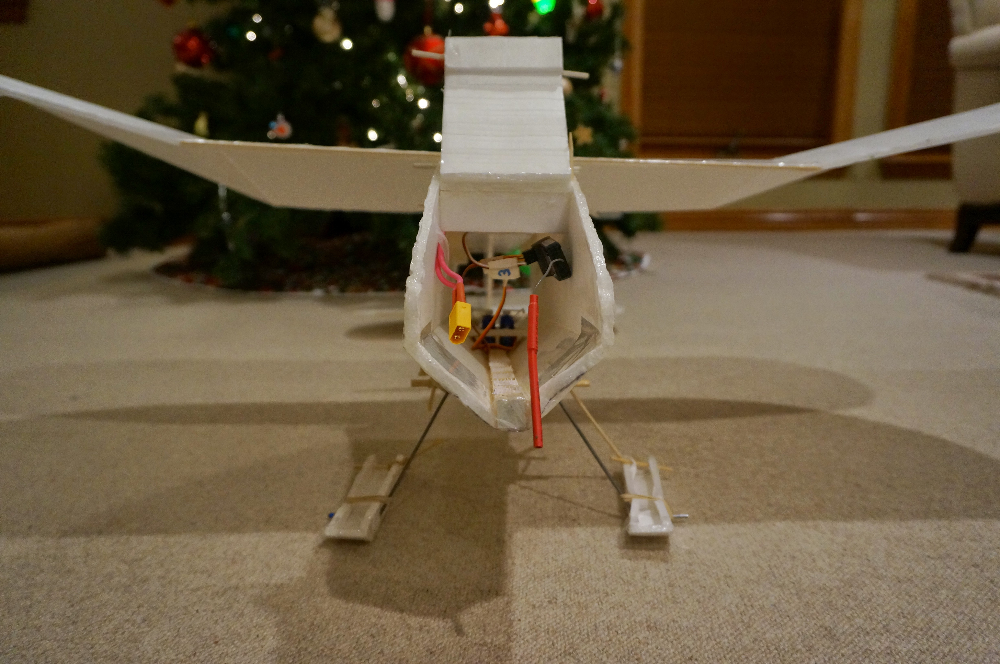
This build is more than inspired by these articles. Feel free to read these first to get a visual idea of what we’re doing, then come back here for the details.
http://flitetest.com/articles/now-you-can-crash-and-keep-flying
http://flitetest.com/articles/the-secret-to-easily-building-a-smash-drone
Let’s do it.
Gather your materials
In no particular order…
Download and print the PDF plans
Your normal, 8 ½" by 11" printer is fine. Color is nice, but not a necessity. You’ll need all three pdfs listed below, printed to scale. To do this, I used Adobe Acrobat Pro on my mac and picked the Poster option from the Print menu.
Optionally, download the Landing Gear plans as well.
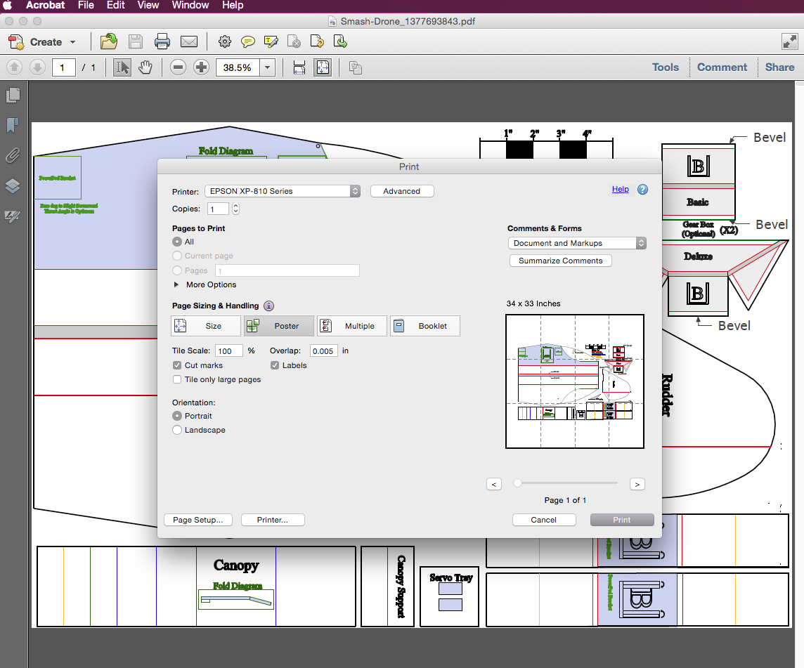
Order the electronics.
I bought mine from HobbyKing’s US warehouse. Reading the forums, I was a little concerned about delivery time, but from order to delievery, it only took 4 days. I had no RC equiment, battery charger, transmitter, etc. so I had to order everything, which means, this is everything you need to use a free simulator your transmitter and get your Smash Drone flying.
HobbyKing pro-tip for the patient, open a component from the link below and wait a minute. A popup will come up and let you buy the part for a little bit cheaper. It seems to only work for some products and only one can be added to the cart at a time:
These components are re-usable the next model you build. $64
Radio Transmitter, commonly called the “TX” – Hobby King 2.4Ghz 6Ch Tx & Rx V2 - Mode 2. This transmitter also includes a receiver. $30
Radio Transmitter programming cable – Hobby King 2.4Ghz 6Ch Tx USB Cable. You’ll want one of these to program the transmitter and use it in the flight simulator, more deets on that in a moment. $4
Battery Charger – Turnigy Accucel-6 50W 6A Balancer/Charger w/ Accessories $30
You’ll need at least one battery. $20 for two.
I bought two, if you’re going to buy just one, get the first one. It works great. The ideal battery weight is 110g, if you have one lying around.
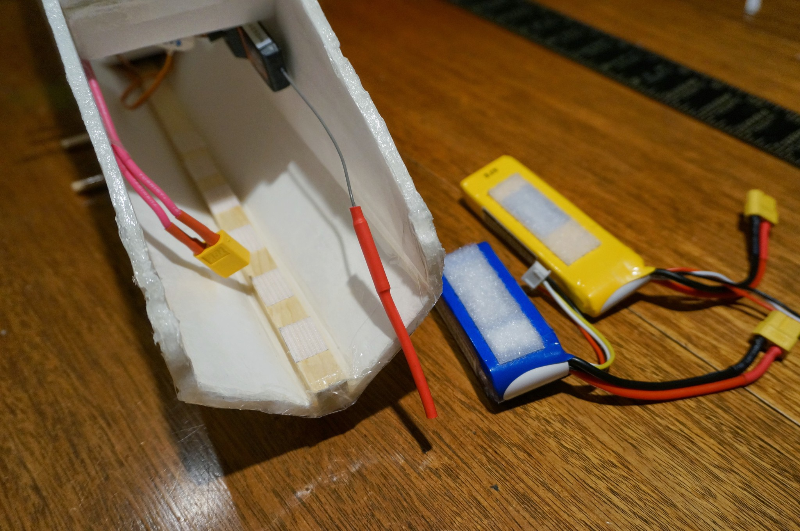
Standard Battery – ZIPPY Compact 1800mAh 2S 25C Lipo Pack. This is the battery suggested by Flite Test for more docile flight characteristics. $10
Super Battery – Turnigy 1300mAh 3S 25C Lipo Pack. This battery is for moooore powwwwer (and less flight time). $10
These components will go in the swappable power pod, which can be moved among various swappable Flite Test planes. $27

Propeller – Slow Fly Electric Prop 8045R (4 pc - Green, RH Rotation). This is a good trainer prop. You could get a more powerful one if you want. $2
Motor – D2822/14 Brushless Outrunner 1450kv. Cheap and relatively powerful. $10
Electronic Speed Controller (ESC) – Turnigy AE-20A Brushless ESC. This also powers your radio receiver, using the same single battery that drives the motor. You’ll need a battery plug for one end and 3 bullet connectors to connect the motor. I’ve listed these parts below. $10
Bullet Connectors – 3.5mm 3 wire Bullet-connector for motor (5pairs/bag). To solder to the ESC, connecting the motor. $5
Finally, these will go in the plane. $13.5
Servos – 2x HXT900 Servos, I ordered 4 extra for a future project. You only need 2 for the smash drone. $7
Battery Connectors – Nylon XT60 Connectors Male/Female (5 pairs). These are the same type of connectors on the batteries. I used them along with the wire below to make a 10" battery extension. You could do this or buy a battery extension. Either way, you’ll need at least 1 male XT60 connector for the speed controller to battery connection. $3.5
16AWG wire – Turnigy Pure-Silicone Wire 16AWG. For the 10" battery extension. I used this great guide by Oscar Liang to figure out what size wire to order. $1
2x Linkage Stoppers. They were out of stock so I got some Du-Bro EZ Connectors at the local hobby shop instead, but they were a little big for the .039 wire, so these Mini EZ Connectors would have been better. These aren’t absolutely necessary, but make it easy to make quick adjustments to the control surfaces. $2
Round up your other supplies.
Buy some music wire. $6
2x .039 or 1mm x 36" music wire – .039 x 36" Music Wire, Stock #497 to use as tie rods, connecting the servos and control surfaces. I bought these from a local Hobby Town for $2.99, but they’re also available on Amazon, although Amazon a bit pricey: http://amzn.to/1wKzyqS. $3
1x 3/32 or 2.38mm x 16" music wire – 3/32 x 36" Music Wire, Stock #506 for the optional landing gear. Again, I got these at Hobby Town for $2.49, but they’re also on Amazon: http://amzn.to/1tynAAw. $2.5
Buy 3x sheets of Adam’s Readi-board at Dollar Tree. $3
You’ll need 1 sheet for the wing, 1 for the fuselage and 1 for the power pod. This is paper covered, foam core poster board. Pick the least-warped pieces you can find. $3
At Hobby Lobby pick up the following. $3
Plywood for the Firewall – 1/8" (or so, just about any thickness will work) plywood. I cut out two of these and laminated them together for a stronger firewall, which btw, is what you screw the motor onto. It probably would have been easier to just buy stronger 1/8" ply or get some ¼". $1.49
1x ½" x ½" x 36" hardwood dowel. Again, go for the least warped. Use a coupon to get it for a cool $1.19.
Although Home Depot also lists this item on their site, they actually only have pine (not Basswood or a similar hardwood), which is fine, but not ideal. I bought a warped pine rod from Home Depot. At least buy a straight one if you go this route.
At Home Depot get a can of paint. $7
This is to waterproof your plane. If you don’t plan on flying in a blizzard, you could try to skip it, but unless you live in an extremly arid climate, it’s probably best to do some sort of waterproofing, as the paper on Adam’s Rediboard tends to delaminate when exposed to even slight humidity.
About which Minwax to buy, since there is lots of conflated information out there:
Minwax Polyurethane is oil based. You’ll want to use this to waterproof your plane when you leave the paper on the foam, as detailed here http://flitetest.com/articles/minwax-on-your-plane. This is best for flat surfaces such as wings and control surfaces.
Minwax Polycrylic is waterbased. It doesn’t come in an oil based format. This is what you want to use when removing the paper from your plane and re-covering with craft paper, as detailed in this flite test video: http://flitetest.com/articles/waterproofing-your-airplane. This works best on fuselages.
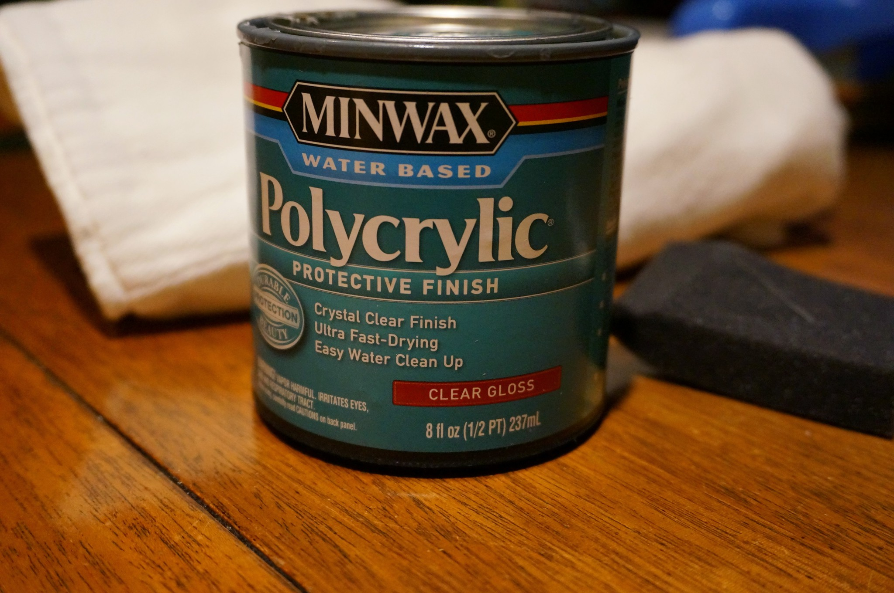
That said, I didn’t know this before waterproofing my plane with Polycrylic, leaving the paper on. It is less than ideal, as the edges of the paper are starting to peel up. I also didn’t wipe away any excess paint, so everything warped… but, it still flies! Don’t do what I did. Buy the Minwax Polyurethane (oil based), leave the paper on and paint it properly, wiping away any exccess right after applying. More on how to do this properly later. For now, just buy the Polyurethane.
An 8oz can of Minwax Satin Fast-Drying Polyurethane $6.48. Get the 1-qt container $10.77 if you plan on making a few planes. This is oil based.
An 8oz can of Minwax Gloss Polycrylic. They only make the polycrylic in water-based format. $9
Finally, make sure you’ve got your building tools and supplies. $45
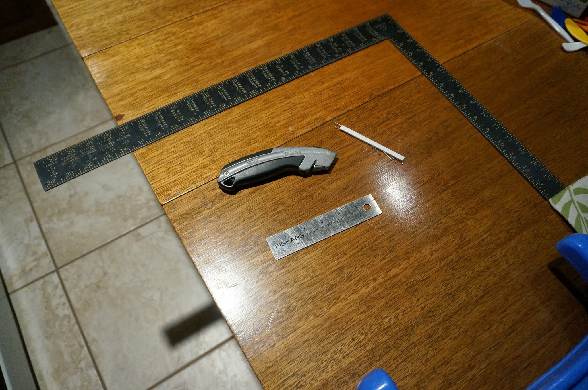
Hobby knife or utility knife for cutting out the pattern. $5
A straight edge or Framing square for cutting straight and 90 degree cuts. $12
Hot glue gun, high temp. $19 and glue sticks
Bamboo skewers. To use as small dowels, re-inforce the leading edges of the plane and protect it from crashes. $4
Lightweight packing tape. You won’t need more than one roll, but it never hurts to have more on hand. $4
Optionally, a piece of sandpaper, for creating perfect bevels and truing your spar.
One straw or similar, to keep the control rods out of the way of the propeller.
Random stuff
If you’re making your own wheels, grab a bit of pool noodle, about 2" will do and 4 plastic bottle caps.
I hear zip ties work well to hold the wheels on the gear, but I bought wheel collets for a few bucks.
Total cost of all supplies, even ones you might have lying around at home already: $180
Ok, let’s go.
Basically we’ll need to: prep our electronics, cut out the plans + foam board, glue and paint the plane, then hook up the control surfaces and fly! After, of course, lots of practice in the simulator.
Before we start building, setup the simulator so you have something to do during downtime in the build. Grab your transmitter (it’s the one with the joysticks on it), programming cable and 12V power cord. Follow the instructions in the post Configuring the HK-T6A for a Flight Simulator
Building.
Electronics.
Solder the bullet connectors onto the 3-wire side of the ESC. I found it easiest to solder these by placing the connector onto a skewer, which I had cut and stuck into a piece of cardboard on my workbench so the solder cup on the connector was facing up. I then heated the cup, tinned it with quite a bit of solder. I then placed the tinned wire inside the tinned cup and heated both with a bead of solder on my iron. Both sides quickly became liquid and the joint was complete. Be sure to place your heat shrink tubing on the wire before soldering the connectors, in case then don’t fit over the connector later, though this is more important with the XT60 connector in the next step.
Solder a male XT60 connector onto the 2 wire side of the ESC, making sure the red wire is on the + side. Don’t forget to place the heat shrink tubing on the wiring before soldering. If you don’t have a heat gun to shrink the tubing once you’ve got the connector soldered on, a candle works great, just don’t get the plug too close or things will burn!
If you bought parts for a battery extension cut the wire to length (10") and solder a male XT60 on one end and a female on the other
Pattern preparation.
Gluestick your pattern together. You’ll have to trim two sides of each piece of paper to get the pattern to fit together. Don’t cut the pieces out of the pattern yet.
- Tape works as well, but I found working with gluestick to be much faster.
Glue your patterns to the foam board. To keep the plane light, I put glue only on the negative parts of the pattern so that when cut out, the plane parts would not have glue on them.
Cutting tips.
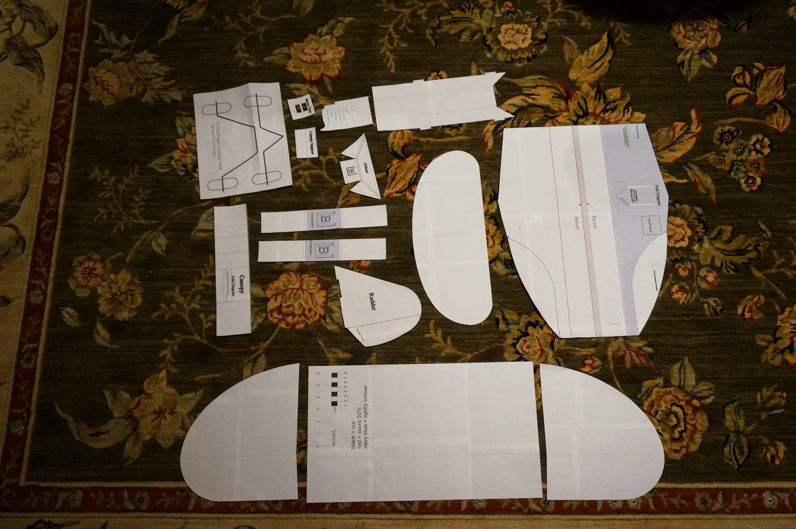
I cut out all the parts first, using the method described below, but the next plane I build, I’ll cut out the parts I need for each major component (e.g. the wing, fuselage, stabilizers, etc.) and assemble. This should provide a better perspective when cutting out parts, so I know I’m cutting the right thing.
Make short (1mm) cuts at the end of each red line and any cuts in the center of a pattern, such as the slot for the rudder on the elevator. This makes it easy to make those ½ cuts and internal cuts even after the part has been removed from the foam board and the pattern has fallen off (since we didn’t glue it to the part).
Use a straight pin to poke a hole in the center of each hole in the pattern, this is so you an easily locate the hole locations later when enlarging them with a skewer. I also used pinholes to mark 50% cut intersections (where any red lines intersect).
Cut out all the parts, making the straight cuts with your straight edge first, then the curved cuts by lightly tracing the curve with your knife then making deeper and deeper cuts until you’re all the way through.
I then made all the 50% cuts, which are really 99% cuts, where you cut all the way through the first layer of paper and the foam, but leave the other layer of paper intact. In hindsight, I should have waited to make each of these, becuase depending on the part, some of these 50% cuts need to be done at different angles, sometimes twice, to remove a V shaped piece of foam from the cut. I’ll list the most efficent way to build the plane, looking back.
For the firewall, I didn’t use the pattern, since it’s just a square, but instead just measured off the same size square on the plywood and made the cut with my knife. I cut out two firewall pieces, with the grain running opposite directions on each piece then glued the pieces together and left them overnight under a stack of biology books.
When my new laminated plywood was done, I marked the holes using the pattern and a pin. I drilled the two holes at the top of the firewall but left the center hole un-drilled as my motor did not require a hole. To cut the hole for the motor wire leads, I drilled 4 small holes at the corners of the rectangle and then used my knife to complete the opening.
Ok, this one isn’t a cutting tip, but it’s important, especially if you plan on painting with the wrong (polycrylic) Minwax. On every piece you glue, place a fine bead of glue along any exposed edge, then while the glue is hot, use a scrap piece of foam to wipe any excess glue off. This should put a fine layer of hot glue along the exposed edge, gluing the paper to the foam. This will help prevent delamination of the paper and foam.
Powerpod assembly.
Make all 4, 50% cuts and remove the thin strip of foam between the two pairs. It should peel right off.
Using the A fold, make sure it fits and is square, then glue it together.
Glue the firewall on the front, the top of the firewall will be taller than the top of the foam. Just make sure the two holes are on the top edge, not the bottom edge.
Josh from Flite Test suggests covering the whole thing in tape to re-enforce it. I did this, but looking back, would have coated the whole thing in a couple coats of polyurethane before taping it up.
Once it’s all taped up, open up the holes you covered with tape on the firewall with your knife and mount the motor. Just be sure to thread the motor leads (wires) through the firewall, into the powerpod body before you screw the motor to the firewall. Use the extra screws (I used the longer ones) that came with your servos to attach the motor.
Electronics.
- Once you’ve got everything soldered. Put a small peice of tape on your motor shaft and hookup the ESC and servos (which on the Hk-T6A receiver, the black or brown lead should be pointing towards the outside) to the receiver. Turn on your transmitter and plug in battery.
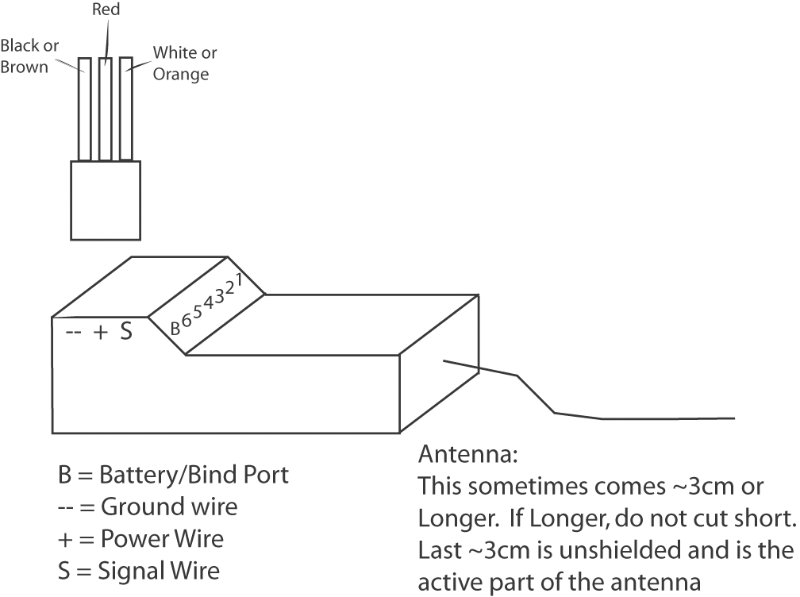
You should be able to power up the throttle, and adjust the servos. You’ll want to put your servo arms (use the single arm ones) on when your system is powered up, to make sure they’re centered.
Look at one of your props. The writing on the blade should face towards the front of the plane, that would be towards the motor in this case. Don’t attach it, but envision the blade spinning the correct direction. If your motor runs backwards, swap any two of the three leads.
Unplug the battery then turn off the transmitter.
Fuselage assembly.
Cut out the canopy and make the 50% cuts, including the one on the opposite side.
Cut the 50% cuts on the powerpod brackets and glue it together. It will make a square U shape, re-enforced by 2 layers of foam on each side.
Cut out the 45° jig
Cut the 50% cuts on the fuselage, which is the biggest part on the main pattern, removing the ½" strip of foam from the center and then adding a 45° bevel so the narrowest part of the bevel measures ½". You can create the bevel with your knife or by folding the board so that the uncut side of your 50% cut rests against the 45° jig. Then using a block of sandpaper, sand away at the inside of the beveled edge until flat. This should create a perfect 45° angle. I went for the knife method to maximize cleanliness, but if you’re in a shop (not a kitchen) sandpaper would probably be easier.
Using the same method as in the middle of the fuselage pattern, you should bevel the other two 50% cuts, so that when folded, the fuselage walls stand at 90° angles to the floor.
You’ll notice dark grey portions on this pattern indicate areas where 50% cuts should be made and the foam between them removed. It should peel right out.
Make sure the square wooden dowel is square by setting it on a flat surface and flipping it over until the flattest surface is found. If it is not square (it rocks on the flat surface) hold some sandpaper on your flat surface and sand it down until it no longer rocks. You should specifically focus on areas at both ends of the rod as these are where the control surfaces (rudder and elevator) as well as the fuselage attach. You’ll want to make sure both are square.
Glue the wooden rod into the fuselage, putting the surface you just sanded flat, facing up. You can use your 45° guide on the first side, but it won’t fit for the second, so it’s best to make sure your cuts have a good 45° bevel and then just glue and hold up the foam board with the wood pressed against the bevel.
Then glue the other 50% cut on both sides, one at a time, using your 45° guide on each side. The sides should now be standing perpendicular to the ground and the rear powerpod bracket should fit nicely.
Glue in the rear powerpod bracket, so the vertical surface of the bracket is flush with the vertical edges of the fuselage.
Cut 2 skewers to length, about ¾" longer than the powerpod. Hold the powerpod in place and insert an uncut skewer into each hole in the firewall, so the powerpod remains in place.
Ensuring the powerpod is level, insert a skewer through the front powerpod bracket and the powerpod itself, securing the power pod and braket in place. Remove the skewer and the powerpod, then re-insert the skewer holding the powerpod bracket in place, hot glue the powerpod bracket one side at a time.
Take a gift card, cut it in half or quarters. Drill a hole in the center, just larger than the size of your skewer. Slide one on each side of the skewer, hot glueing it on the outside of the fuselage.
Take out the skewers and powerpod and insert both uncut skewers into the new holes. I put them almost all the way in, about ¼" left to go, put some hot glue on the skewer and inserted the rest of the way. I then glued the opposite end, which should be flush with the other side of the powerpod bracket.
Cut out the servo tray. Bevel the bottom edges at a 45 degree angle. Insert your servos, the wires on both should be pointed towards the front of the plane. Glue it into the bottom of the plane, at the center of gravity, which is right below the pointy part of the fuselage. Which, by the way, matches the camber of the wing and where your wing will rest. After crashing this plane many times, this is the only part that has reliably come loose. Use a liberal amount of glue ot hold in the servo tray or you’ll be gluing it back in again soon!
Use a peice of tape to secure the battery extension to the inside of the fuselage running between the nose and the to of the forward powerpod bracket.
Glue together the canopy. The leading edge will have the foam doubled over. Tape the top of the hinge and put some hot glue in the bottom side of the hinge and wipe away the excess, to make sure this joint won’t fail. Curve the nose a bit with your fingers until the canopy matches the shape of the fuselage. Use a peice of tape on the inside of the canopy to keep the curve. Glue in the canopy.
With the canopy in place, glue a popcicle stick or a skewer to the top, front edge of the canopy door. This wil hold a rubberband around the nose, keeping our canopy down while in flight.
I put a bbq skewer in vertically, just aft of the hatch opening. Before flying I always slip the receiver antenna shrink wrap over the bbq skewer to hold the antenna in the optimal (vertical) position during flight.
Cut some sticky sided velcro and put a few peices along the wood dowel ever ½" or so. This will allow you to position your battery precisely and obtain an optimal center of gravity. It’s also great for securing other things, like cameras.
I also put a single peice of velcro on the inside of the fuselage, just under the hinge where I stick the receiver. Along with that velcro, I used a skewer, stuck vertically into the side of the fuselage just aft of the hindge, to hang the antenna’s shrink wrap.
Insert the leading edge skewer that will be used to secure the wing. You’ll want about ¾" exposed on each side of the fuseage. I ran the skewer through the center of the horizontal canopy foam on the top side of the fuselage. In retrospect, I should have run it just inside the canopy, so it rests just inside the canopy, for maximum strength. I used masking tape to ensure the skewer doesn’t splinter, I would use packing tape for this in the future.
Glue in your straws, to keep the control linkages safe from the propeller.
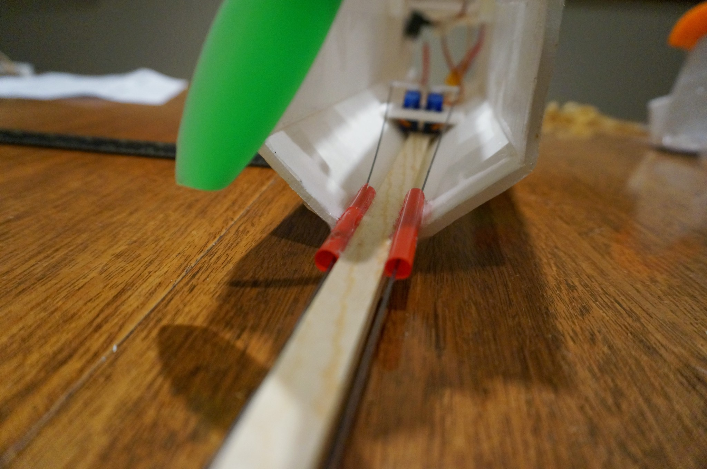
Control Surfaces
Cut out your elevator and rudder, making sure to use a pin to mark the control horn cuts on the control surface.
On the control surface hinge, cut a 45 degree, or so, no need to be precise, bevel.
Cut a small strip (1/32" or 1mm) of foam off each edge of the control surface, so it moves freely without rubbing against the tail surface.
Take an old credit card, gift card or hotel room key and cut a triangle. Mine are far too big. Yours should be smaller (maybe ½" height x ¾" length).
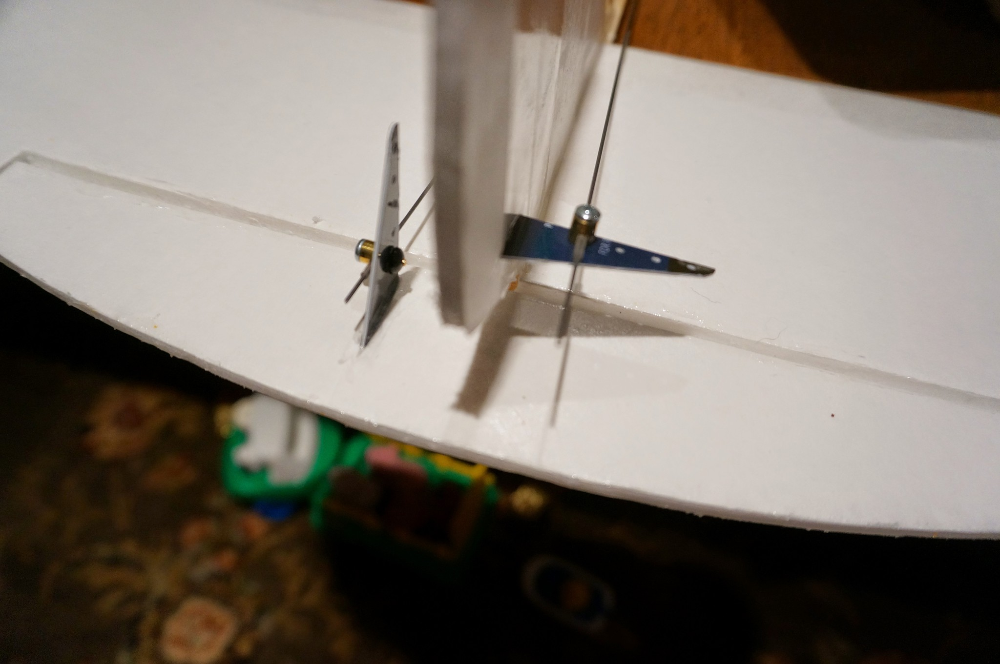
- Attached your ez connects in the control horns and glue the horns into the control surface. My ez connects were slightly too large so I put a peice of shrink wrap tube over the wires before inserting and they work great!
Wing assembly.
Cut out the wing and make the 50% cuts. I widened the 50% cuts a bit by making 2 parallel cuts and filled the gap with hot glue. I should have made 1 cut then folded open the cut and used a block of sandpaper to get the right size cut matching the wing’s camber.
Cut out the wing gauges.
Glue the wing sections to the proper camber using the wing guages
Glue the wing sections together. Glue one wingtip, measure, then glue the other, matching the wing tip height with the first wing tip.
Paint the wing with your minwax, if you want a waterproof plane. Be sure to wipe off any exccess after each stroke or you’ll get a warped wing like I had. I had to put my wing under a couple books for a few days after the minwax was fairly dry, to remove the warp.
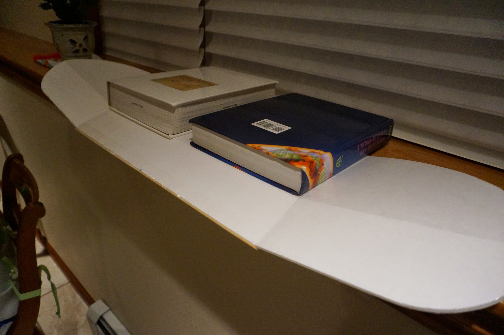
I then taped bbq skewers to the leading edge of the wing. I should have done the trailing edges as well. You wouldn’t think that would be necessary, but on one particularly hard landing, the wing moved into the path of the prop which sliced a nice gouge into the trailing edge of the wing.
Test fit the wing and you should be ready to fly. We’ll add some landing gear though.
Gear Box
I went with the fancy option for the gearbox since it seemed more durable – and with the beating this plane has taken, I’m glad I did.
After cutting out and gluing the gearbox then gluing it to the fuselage, I put 4 vertical bbq skewers into the gearbox, one into each corner, to support the skewers when gear is rubber-banded on. I then put 2x bbq skewers across both the leading and trailing edge. The front two broke after a few flights so I replaced those with a chop-stick. I then taped over the whole thing.
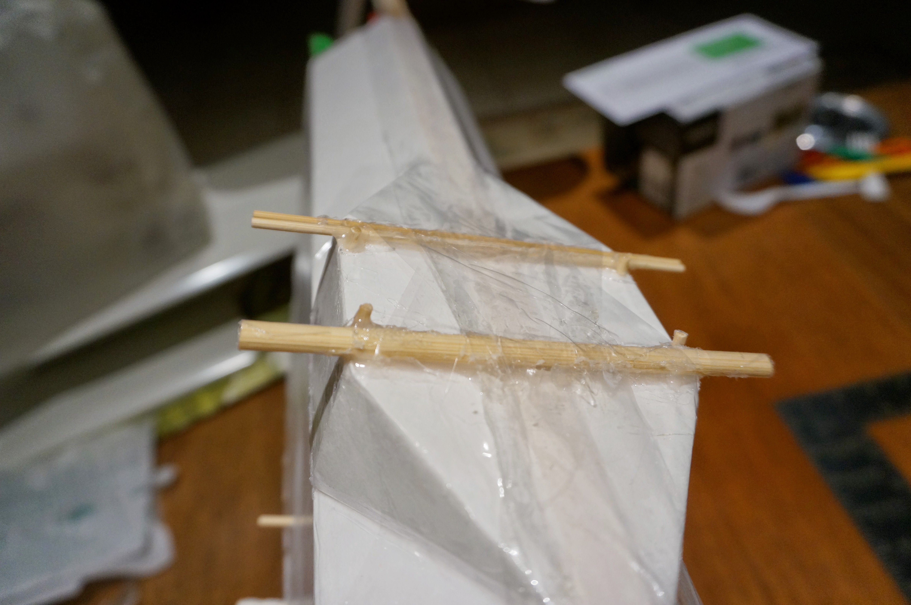
Landing Gear.
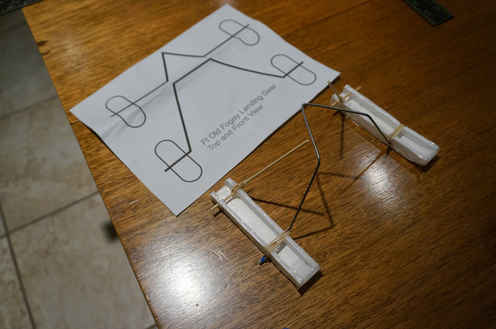
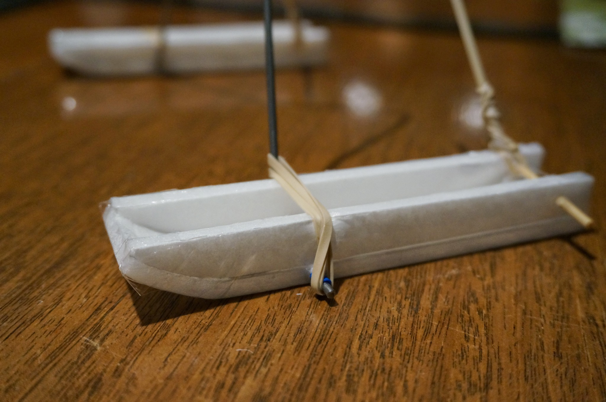
I started with some skis, then later switched to wheels. Skip this if you bought some. Otherwise, we’ll start by making a circle center finder – take some scrap foam and cut out a 45 degree angle into which your bottle cap will fit.
Grab your Old Fogey landing gear plans and length of landing gear wire. I used 3/32" diameter wire.
I used a bench vice and starting with the middle bend, worked my way out. My landing gear turned out slightly crooked though, so if anyone has tips, I’m all ears.
After making all the bends make a center finding jig to help drill your bottle caps by cutting a 90 degree angle in a scrap piece of foam, big enough so your bottle cap will fit. Make sure the edges of the triange are the same length. Then measure across the opening, mark the center on a piece of paper below your foam board. Glue a straight piece of foam with one edge down the center of the 90 degree angle using your mark as a guide. Alternatively, buy one of these Robert Larson 800-2875 Plastic Center Finder
Use your center finder to find the center of your bottle cap. You’ll want to place the cap in the center finder and draw a line along the straight edge in the middle. Rotate about 120 degrees and draw another line, rotate and draw one more line. The center should be clear. Dril it!
Take the drilled caps and hold them together to measure the width of your pool noodle. Push the cap into the cut pool noodle and glue them in.
Without the wing, with the gear, I’m at 400 grams.
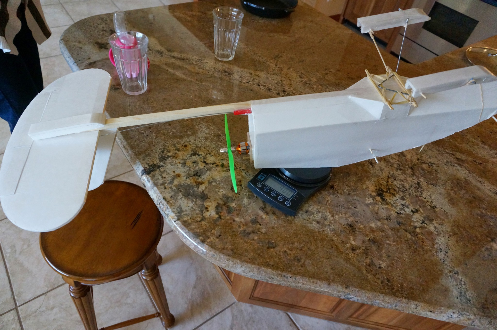
Battery Charging.
Plug a 12 volt power supply into your charger.
Using the -/+ pick LiPo Balance, this will charge and balance your battery.
Press the enter button then use the -/+ to pick the battery size and voltage.
Plug in your battery. One connection goes into the bullet connectors via the proper battery adapter plug (XT60 in this case). Make sure you plug the bullet connectors into the right plugs! Black to black and red to red. The other, smaller white connector, plugs into the proper balance port. There is a balance port for each size (cell count, S) battery the charger supports.
Press and hold enter to start balancing and charging. It will ask you to confirm, press enter again.
Press + to see the individual cell voltages.
Wait for your battery to charge to the max voltage, 4.2v per cell.
Flying.
- Watch this awesome Flite Test video. Key point: when the plane is flying towards you, picture the wings as a table. Point your (right) stick towards the side that is dipping to support it.
If you haven’t already, configure your HK-T6A for a free flight simulator and practice. A lot.
Hook up your plane.
- Plug in both servos and the esc into the receiver. Remeber, black/brown wire towards the outside. I used the programming/configuration tool on my computer to figure out what channel corresponds to each stick/direction. I then plugged in the servo/esc cables and labeled them with a small piece of tape so I can remove the reciever and use it on another plane.
- Rubber band your wing on. Use a couple rubber bands on each side. Just in case.
- Turn your transmitter on, make sure the throttle is all the way down and everyone is clear of the prop.
- Plug in the battery and wait for it to finish doing the weird beeping thing followed by 5 beeps.
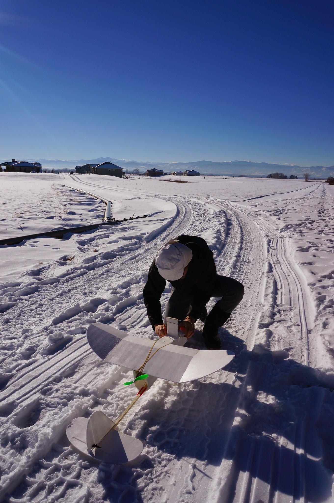
With your right stick centered, make sure you control surfaces look straight. If not, adjust with the ez connectors.
Check that your control surfaces move the correct direction. Right stick left should move the rudder left, right stick up should move the rudder up.
Check the throttle. Up should power up the motor. If the throttle isn’t working, check the two switches on the top of your radio.
Fly. You should probably start slow. Practice taking off and landing in a straight line. Once you feel comfortable with that, try a circle. Then mabye a figure 8 or flying upside down in a loop while doing a barrel roll.
Crash. Thanks to the indistructable nature of this plane, you basically can’t go wrong. Bring some packing tape, bbq skewers and some extra used gift cards to the field with you, just in case.
- Give it to your wife to crash.
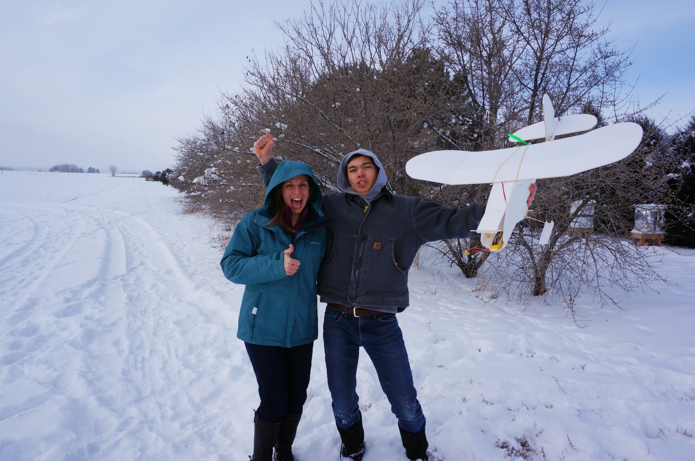
- And and your dad, in a ski mask, becuase it’s -10 out…
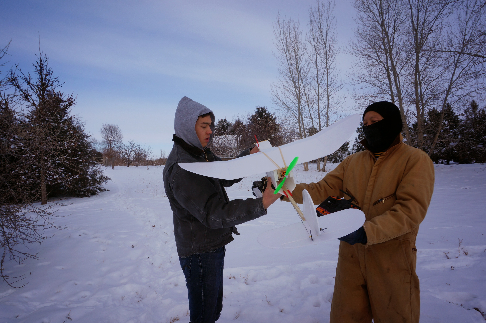
- And and your sister…
- Next one of these I build – and there will be another – I’ll re-enforce all the bbq skewer holes with gift cards, especially the one that holds on the leading edge of the wing, which tends to take the most force, and the rear powerpod bracket / bbq skewers which get beat up every time someone puts the nose of the plane into the ground.
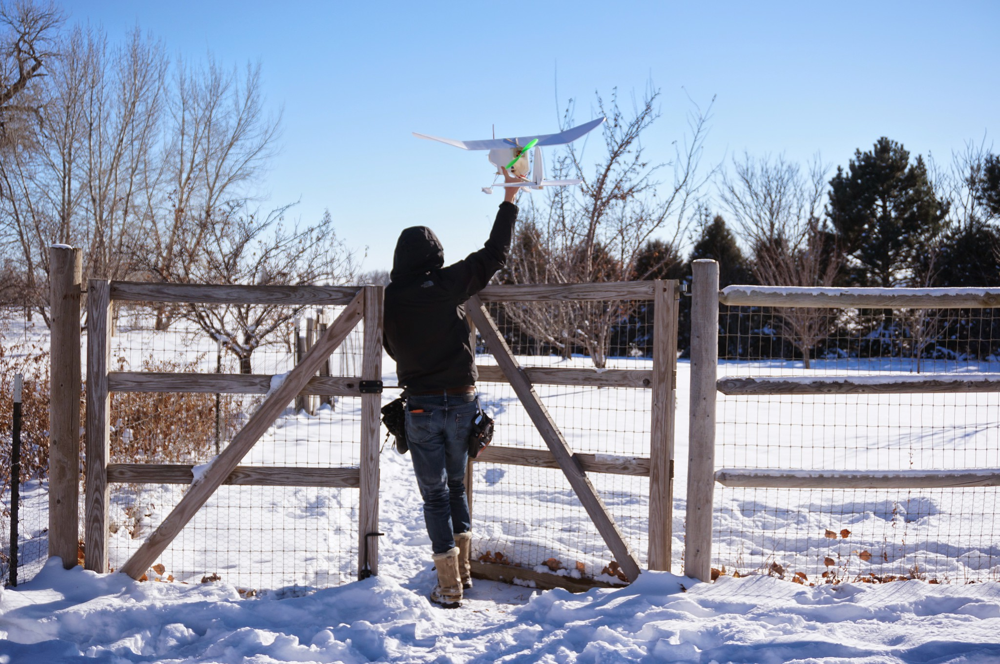